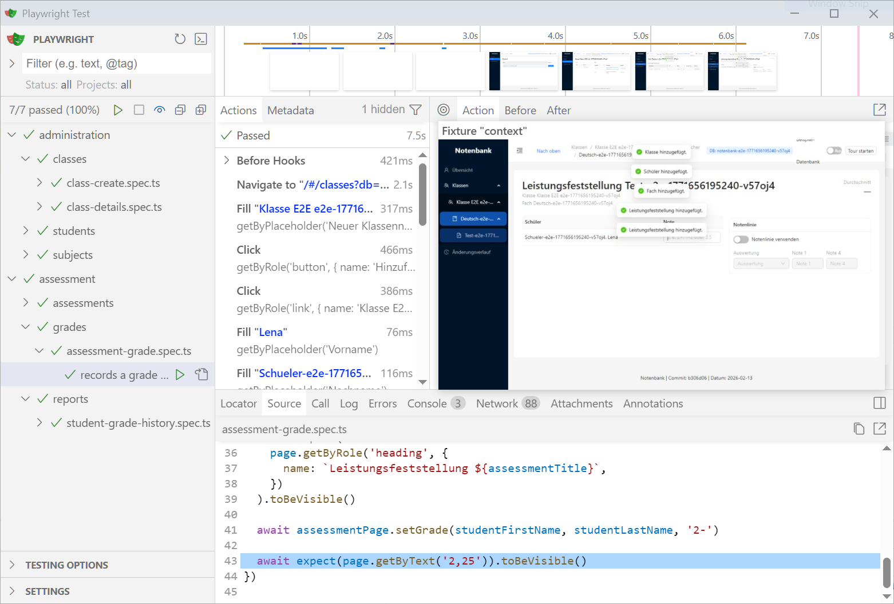

Automatisches Programmieren mit LLMs
Manuel Woelker - 2026-03-03
Agenda
- Was habe ich getan?
- Was habe ich gelernt?
- Wie sieht die Zukunft aus?
Mal sehen was geht
Was kann man mit LLM-basierten, "automatischem Programmieren" machen?
Regel: So wenig Code wie möglich schreiben.
Tools
- Claude Code Pro (23 €/Monat) - Opus/Sonnet/Haiku 4.5
- OpenAI Free (0€) - ChatGPT Codex 5.2/5.3
- OpenCode (0€) - Kimi 2.5/GLM 5/BigPickle
Skriptsprache + Interpreter (3 Tage)
Schulnotenverwaltung (8 Tage)
+ Playwright E2E tests

Card Auto Battler (3 Tage)